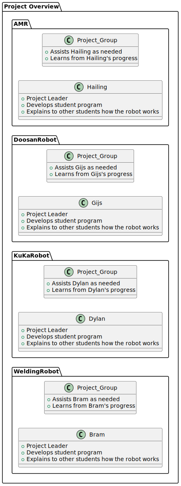

Task Overview
This document outlines the structure of a collaborative project involving multiple robotic systems. Each robot is assigned to a student who serves as the project leader, responsible for developing a guide for the group and explaining the robot's functionality. The project focuses on four robots: WeldingRobot, KuKaRobot, DoosanRobot, and AMR. For each robot, the assigned student leads development, explains the robot's operation, and collaborates with their project group, which provides assistance and gains knowledge throughout the process.
Project distribution
The diagram represents a project with four robot systems: WeldingRobot, KuKaRobot, DoosanRobot, and AMR. Each system has a project leader (Bram, Dylan, Gijs, and Hailing) who develops the student program and explains it to others. The project groups assist the leaders and learn from their progress.

Indivisual project overview
The diagram represents a project with three robot systems: KUKA, Welding, and Doosan.
Right now we are at the beginning of the project. The plan for now is to do the following:
- KUKA: Plays tic-tac-toe with the project leader and teaches others how the game works.
- Welding: Focuses on welding tasks, with the leader developing the program and explaining it to others.
- Doosan: Picks and places blocks, sorting them by colors, with the leader guiding and teaching the process.
Each project group assists their leader and learns from their progress.